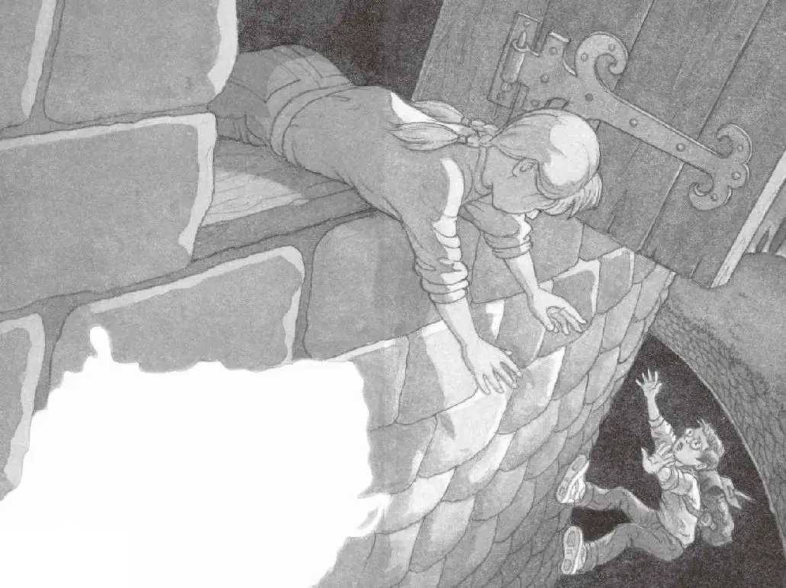

安妮和杰克迅速冲上弯曲盘绕的楼梯，跑进那条长长的走廊。
还没跑多远，就听见后面传来了喊叫声。
随之而来的还有狗吠声。
“他们追来了！”安妮喊道。
“快上这儿来！”杰克说着推开走廊旁边的一扇门，把安妮拉了进去，然后转身把门关上。
安妮拧开手电筒照了照，只见房间里摆放着一排排麻袋和木桶。
“我最好查查书，”杰克说，“把它们给我！”
安妮把手电筒和书包递给杰克。杰克掏出骑士和城堡书，飞快地翻起来。
“嘘！”安妮说，“有人来了。”
杰克和安妮赶紧跳到门后，门吱吱嘎嘎地打开了。
杰克屏住呼吸。
一道火把的亮光在麻袋和木桶上晃了几下便消失了，随之门也砰的一声关上了。
“天哪。”杰克轻声说，“我们得抓紧时间了，他们可能还会回来的。”
他翻开书，双手不住地颤抖。
“这儿有一幅城堡的平面图，上面画的肯定就是我们现在这个房间，这是一间储藏室。”杰克说着又仔细看了看那幅图片，“看，这有一袋袋面粉和一桶桶葡萄酒。”
“别管这些了，趁他们还没回来，我们得赶紧离开这儿！”安妮说。
“不，你看。”杰克指着平面图说，“这儿有一个暗门。”
他把图片下面的字念了出来：
这扇门从储藏室通向一个秘密地道，地道通向护城河上方的一处绝壁。
“绝壁是什么？”安妮问。
“不知道，但我们会弄明白的。”杰克说，“先去找那个暗门吧。”
杰克仔细观察了一下那幅图，然后用手电筒在房间四周照了照。
房间的地面上铺着石板。从门数过去的第五块石板处就是图片上画着的暗门。
杰克用手电筒照着地面，一边走一边数：“一、二、三、四、五。”
他在第五块石板上停了下来，踩了踩。
太好了，是松动的！
他连忙放下手电筒，把手指伸到薄薄的石板下面，想把它搬起来。
“来，安妮，帮我一把。”杰克说。
安妮凑过来，帮他一起把那块方石板搬了出来。
这时，他们看到石板下面有一扇小小的木门。
杰克和安妮拽了拽门上的绳把手。砰的一声，门开了。
杰克用手电筒往里面照了照，对安妮说：“这儿有一个小梯子，我们下去看看吧！”
他踩着小梯子摸索着往下爬，安妮跟在后面。
来到梯子底部时，杰克又用手电筒照了照四周。
果然有一个地道！
杰克和安妮俯下身，爬进了那个湿漉漉、阴森恐怖的地道。手电筒的光勉强能把石壁照亮。
杰克晃了晃手电筒，心想：“难道电池快用完了？”
“手电筒好像快没电了！”他对安妮说。
“那我们得快点儿！”安妮在后面喊道。
杰克加快了爬行速度，但这样一直弓着腰爬，后背酸痛极了。
手电筒的光越来越暗了。
杰克十分担心，他不知道他们能不能在电池用完之前离开城堡。
幸好，很快，他就摸到了地道尽头的小木门。
杰克急忙拉开门闩，推开门，把头探到外面。
在雾蒙蒙的黑暗中，杰克什么也看不见。
空气凉爽而清新，他深深地吸了一口气。
“我们现在是在哪儿？”安妮在他身后轻声问，“你看见什么了？”
“什么也没看见，但我觉得这儿已经是城堡外面了。”杰克说，“我去看看。”

杰克放好手电筒，背起书包。
他先把手伸出门外摸了摸，但除了空气什么也没摸到。
“我得先找个落脚点。”杰克说着在狭小的地道里转了个身，背朝洞口。
他把上半身紧贴地道，再把一条腿伸出门外，然后将另一条腿伸出去。
他小心翼翼地一点点往外挪动，两只脚向下试图触碰地面，直到他整个身子都悬挂在门外时，他才意识到，下面应该是悬崖了。
“快把我拉上去！我碰不到地面！”他大声对安妮喊，“这儿肯定就是绝壁了！”
安妮赶紧上前去拉杰克的手，可是太晚了。
“我抓不住你！”她大喊。
杰克感到自己两手一滑，坠落在黑暗里。
扑通！